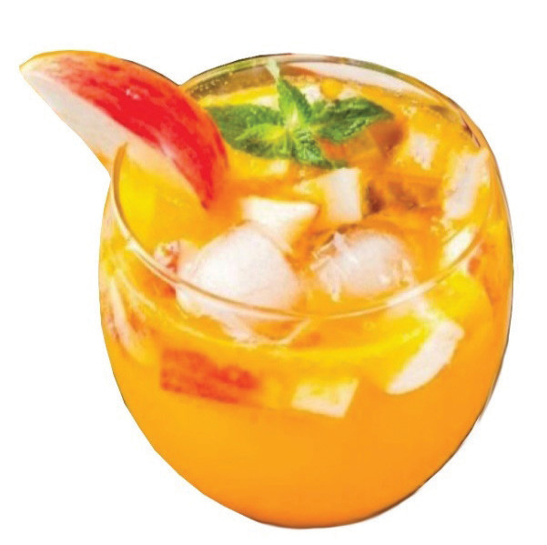

Figure 5.2 illustrates apple punch

Figure 5.2: Apple Punch

Activity 5.2
Preparation of a punch
Prepare a punch using apples or any other fruits available in your area by following the appropriate methods
(i) Assess the quality of the prepared punch.
(ii) Why did you add mint leaves to the punch?
(iii) What are the benefits of using punch in the body?
(iv) On which occasions can this punch be used?
(v) Write a report on the performed task.
Pineapple juice
Ingredients (serve 3 people)
- 1 medium size pineapple
- 1 tablespoon sugar
- 500 ml water
97